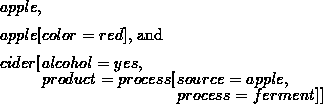

Institute for New Generation Computer Technology
4-28, Mita 1-chome, Minato-ku, Tokyo 108, Japan
{nitta, kyokota, aiba, ishikawa}@icot.or.jp
An oid is in the form of a tuple called an object term. For example,
apple,
apple[color = red], and
cider[alcohol = yes,
product = process[source = apple,
process = ferment]]
if assumptions then answer because explanation, if hypotheses then ?-query (written as ?-query;;hypotheses).

&environment n-queens;
&common_type common-type-file:
&agent_dir queen-1, queen-2, queen-3,
queen-4, queen-5, queen-6,
queen-7, queen-8;
&type simple;
¶meter ID:int = 1;
&agent queen1;
&env n-Queen, nQ.env;
&inside prolog
&sub /app/nQueen/lib/queen-pr.pl;
&substance_type prolog
&connection pipe;
&import_method
solve_n_queens @ #1:int -> #2:[position]
=>
n_queens @ #ID:INT, #1:INT, #2:[POSITION];
...
&export_method
get_my_domain @ #1:position -> #2:positions
<=
bag_of!get_others_positions @ #1:POSITION,
#3:INT,
[#2]:[POSITIONS];
...
&convert
(id-#1,position=#2):position
<-> [#1,#2]:POSITION;
(id-#1,position=#2):positions
<-> [#1,#2]:POSITIONS;
&self_model
&function 4queens, 5queens, 6queens,
7queens, 8queens;
are object terms, where the first term is basic, but the latter two are complex.